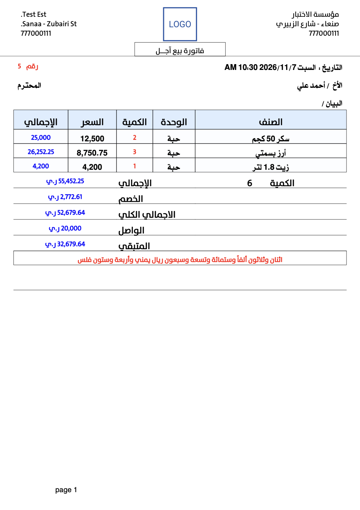
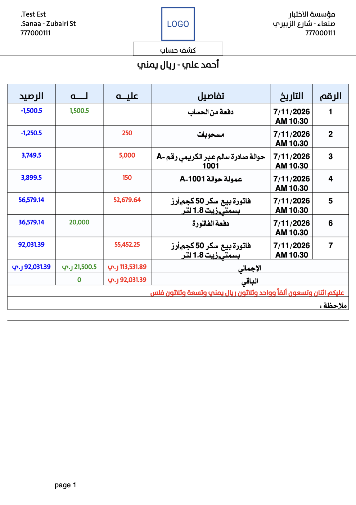

المحاسب الذكي برو نظام محاسبي متكامل يعمل على الجوال، يجمع في تطبيق واحد ما تحتاجه المنشأة الصغيرة والمتوسطة: الحسابات، والسندات، والفواتير، والمخازن، والتقارير، والطباعة، والرسائل للعملاء. صُمّم ليكون دقيقاً محاسبياً، وسريعاً في الإدخال اليومي، وآمناً على البيانات.
فواتير بيع وشراء، كاشير سريع بالباركود، مخازن وجرد، وديون العملاء مع رسائل المطالبة.
سندات الحوالات الواردة والصادرة بعمولاتها، صرف العملات، وقراءة رسالة الحوالة تلقائياً.
العيارات والأوزان، أرصدة بالوزن لكل عيار، وتحويل العيارات في سند واحد.
فواتير المقاسات بالطول والعرض أو المساحة والارتفاع، بقوالب لكل نوع عمل.
فواتير حرة وخدمية بلا مخزون، وتقرير ربح لكل خدمة.
متابعة من لك ومن عليك بكل عملة، مع تنبيهات مواعيد السداد.
كل سند أو فاتورة يمر بنفس الدورة، ولذلك تبقى الأرصدة صحيحة دائماً:
ينقسم الكتالوج إلى جزأين: الجزء الأول (اللون الأزرق) للميزات المحاسبية التي يقوم عليها العمل اليومي، والجزء الثاني (اللون البرتقالي) للإضافات التي تختصر الوقت وتحمي البيانات. في كل ميزة تجد وصفها، وخطوات استخدامها، وتفاصيلها الدقيقة، ونصائح عملية في المربعات الملوّنة.
نظام محاسبي متكامل يغطي الحسابات والمستندات والمخازن والتقارير بدقة واحترافية. هذا هو قلب التطبيق الذي تُبنى عليه كل الإضافات.
الأساس الذي تُبنى عليه كل الحركات: من لك، ومن عليك، وأين نقدك.
تُنظَّم الحسابات في مستويين: حسابات رئيسية (تصنيفات مثل العملاء، الموردين، المصروفات) تظهر كبطاقات في الشاشة الرئيسية، وتحت كل منها حسابات فرعية (العميل أو المورد نفسه). يظهر رصيد كل حساب لحظياً وبكل عملة.
أنشئ ما تحتاجه من صناديق (صندوق الكاشير، صندوق المدير، حساب البنك). عند إنشاء أي مستند جديد يختار النظام الصندوق تلقائياً حسب الحساب، وفق ثلاثة مستويات:
يُطبَّق ذلك على سند القبض والصرف، والحوالة، وصرف العملات، والفاتورة، والمردود، والسداد السريع. عند تعديل مستند قديم لا يتغير صندوقه المحفوظ أبداً، ويبقى بإمكانك تغيير الصندوق يدوياً في أي وقت.
يعرض لكل حساب: الرصيد الافتتاحي للفترة، وكل حركة مدينة ودائنة ببيانها، والرصيد التراكمي بعد كل حركة. يمكن اختيار الفترة (يومي، شهري، سنوي، الكل، أو من تاريخ إلى تاريخ) والتنقل بين الفترات بزرّي السابق والتالي.
زر الفلتر في شاشة أرصدة الحسابات يعرض قائمة جاهزة، وتتحدث معها الإجماليات والطباعة لتطابق المعروض:
يبقى الفلتر النشط مطبّقاً بعد إضافة سند والعودة، ويتلوّن زره ليذكّرك بأن القائمة مفلترة.
أرسل للعميل رسالة برصيده لمطابقته، وعند نهاية التعامل أو الفترة أغلق الحساب ورحّل رصيده بأمان، مع بقاء كل حركاته السابقة في الكشف.
كل حركة نقدية أو آجلة لها مستند واضح، مكتوب مبلغه بالحروف، وقابل للطباعة والإرسال.
تحويل مبلغ من حساب إلى حساب في سند واحد (مثل تسوية بين عميل ومورد)، مع اسم الطرف في بيان كل جهة.
قيد واحد يجمع عدة أطراف مدينة وعدة أطراف دائنة بعملة واحدة، ولا يُحفظ إلا إذا تساوى المدين والدائن.
عند حذف أي سطر من قيد مركب من التقارير يسألك النظام: هل تريد حذف القيد بجميع أطرافه؟
مستندات مستقلة لتسوية أرصدة الحسابات (خصم ممنوح، فرق سعر، تصحيح رصيد) دون الحاجة لفاتورة أو سند نقدي.
سند مخصص للحوالات يسجّل المرسل والمستلم وشركة التحويل والمبلغ والعمولة، فتُقيَّد الحوالة على الحساب والعمولة في سطرها الخاص. ويمكن تعبئة السند كاملاً بلصق رسالة الحوالة (الفصل 07).
سند يبيع أو يشتري عملة مقابل أخرى: تختار العملتين، فيُقترح سعر البيع أو الشراء لكل منهما، ويُحسب المبلغ الناتج ويُكتب بالحروف، ويمكن تنفيذه على الحساب أو في الصندوق.
نقل السيولة من صندوق إلى آخر (مثلاً من الكاشير إلى البنك) بسند مستقل يظهر في تقارير الصناديق.
من فاتورة البيع العادية إلى الكاشير السريع وفواتير المقاسات، بكل ما تحتاجه من خصم وضريبة ووحدات.
إرجاع بضاعة مباعة أو مشتراة مع إعادة الكمية للمخزن وتسوية الحساب تلقائياً. والأسرع: زر "استدعاء من فاتورة سابقة":
عروض أسعار للعملاء وطلبيات من الموردين بمستندات مستقلة لا تؤثر على الأرصدة أو المخزون، تُطبع وتُرسل، ثم تُصدَر منها فاتورة مباشرة عند الموافقة دون إعادة إدخال الأصناف.
فواتير بلا مخزون: تكتب البيان والوحدة والكمية والسعر بحرية. تناسب الخدمات والصيانة والأعمال الحرة، ولها تقرير ربح مستقل لكل خدمة (الفصل 06).
شاشة مصممة لنقطة البيع: عدة فواتير معلّقة متوازية (تذاكر) لخدمة أكثر من زبون في نفس الوقت. تفتحها من "الكاشير" في قسم المخازن بالقائمة الجانبية، أو من أحد الأزرار التسعة.
لمهن الألمنيوم والزجاج والستائر والمفروشات. تُنظَّم الفواتير تحت قوالب، والقالب يحدد طريقة الحساب:
| نوع القالب | البعد الأول | البعد الثاني |
|---|---|---|
| طول × عرض | الطول | العرض |
| مساحة × ارتفاع | المساحة | الارتفاع |
| أخرى | تسمية حرة | تسمية حرة |
لكل بند: البعدان، والمساحة (تُحسب تلقائياً وتقبل التعديل)، والكمية، والسعر، والاسم والتفاصيل مع اقتراحات من البنود السابقة. الوحدة سنتيمتر أو متر، وخيار "حد أدنى متر" يرفع البند الأصغر من متر مربع إلى متر. الشريط السفلي يعرض عدد الأمتار وعدد القطع والإجمالي.
بطاقة دقيقة لكل صنف، وأرصدة صحيحة في كل مخزن، وجرد يكشف الفروقات ويسوّيها.
عند إضافة صنف جديد اكتب الكمية الافتتاحية واختر مخزن التوريد، فيُنشئ النظام سند توريد مخزني تلقائياً ويظهر الرصيد فوراً في التقارير والجرد. يُحفظ الصنف والسند معاً أو لا يُحفظ أي منهما.
أدخل مئات الأصناف دفعة واحدة من ملف Excel بنموذج ثابت: الاسم، والباركود، والوحدات الثلاث ومعاملاتها وأسعارها، والوحدة الافتراضية، وتاريخ الانتهاء، والعملة، والكمية الافتتاحية (عمود اختياري).
أنشئ ما تحتاجه من مخازن (المحل، المستودع، الفرع)، وانقل البضاعة بينها بسند تحويل مخزني، مع رصيد كل صنف في كل مخزن.
جلسات جرد لكل مخزن، بنمطين: إجمالي لرصيد الصنف كاملاً، أو حسب تاريخ الصلاحية لكل دفعة على حدة.
من شاشة المخازن اعرض فواتير المخزن وأرشف القديمة منها: تبقى الفاتورة في الحسابات وأرصدة العملاء، وتُستبعد كمياتها من المخزن. ويمكن إلغاء الأرشفة لإعادة الكميات.
نظام كامل لتجار الذهب، وعملات متعددة بأسعار صرف واضحة في كل مستند وتقرير.
وضع تشغيل خاص بالصاغة يُفعَّل من "إعدادات تطبيق الذهب". عند تفعيله تظهر:
أضف ما تشاء من عملات، لكل منها اسم واسم كسر (ريال/فلس، دولار/سنت) ورمز وسعر بيع وسعر شراء. كل سند وفاتورة يحفظ سعر الصرف لحظة إدخاله، والرصيد يظهر لكل عملة على حدة.
في كشف الحساب وأرصدة الحسابات خيار "مصارفة الكل بعملة..." يحوّل كل الحركات بمختلف عملاتها إلى العملة الافتراضية المختارة في الإعدادات ويجمعها في رصيد واحد، مع التفقيط والطباعة بتلك العملة. وعند فتح مستند من الكشف يعود لعملته الأصلية.
كل تقرير بفترة قابلة للاختيار (يومي، شهري، سنوي، الكل، من–إلى)، وبعملة محددة، وجاهز للطباعة والتصدير.
كل الحركات النقدية والآجلة لجميع الحسابات في تقرير واحد، مع إمكانية تحديد عدة سندات لنقلها أو نسخها أو طباعتها.
بطاقة واحدة تلخّص وضع المنشأة لفترة محددة في عشرة مؤشرات ملوّنة:
| المؤشر | المعنى |
|---|---|
| إجمالي المدين (لكم) وإجمالي الدائن (عليكم) | مجموع أرصدة الحسابات |
| إجمالي النقدية في الصناديق والبنوك | السيولة المتوفرة |
| قيمة بضاعة آخر المدة | قيمة المخزون |
| صافي الأرصدة والنتيجة | فائض (أرباح مرحّلة) أو عجز (خسائر) |
| المبيعات والمشتريات وصافي الربح | نتيجة النشاط في الفترة |
| نسبة السيولة النقدية | النقدية إلى الالتزامات، بمنزلتين عشريتين |
ربح كل فاتورة بمقارنة سعر البيع بسعر التكلفة، وإجمالي الأرباح خلال الفترة.
يجمع حركات الفترة حسب نوع المستند: المقبوضات، والمصروفات، والمبيعات، والمشتريات، والمبيعات الخدمية، والمشتريات الحرة، ومردودات البيع والشراء، والحوالات الواردة والصادرة وعمولاتها. يعمل بثلاثة أوضاع: النقدية (لصندوق محدد أو كل الصناديق)، والآجلة، وكل الحركات.
حركة التدفق النقدي، والذهبي في نظام الذهب، لكل صندوق وكل عملة: الوارد والمنصرف والرصيد.
مبلغ الضريبة لكل فاتورة بيع أو شراء أو مردود في الفترة، مع إجمالي ضريبة المبيعات وضريبة المشتريات وصافي الضريبة المستحقة.
لكل خدمة في الفواتير الحرة: الكمية المشتراة والمبيعة، ومتوسط سعر الشراء والبيع، والربح، مع إجمالي "بيع، شراء، ربح أو خسارة". يُصدَّر PDF أو Excel.
أدوات إضافية تختصر وقتك وتجعل عملك أسرع وأسهل وأكثر أماناً. هنا يظهر الفرق بين برنامج محاسبة عادي ومحاسب ذكي.
أقل كتابة ممكنة: تكلّم، أو الصق، أو امسح، والتطبيق يكمل الباقي.
اضغط زر الميكروفون وانطق المبلغ أو البيان أو اسم الصنف، فيكتبه التطبيق في الحقل. يعمل بالعربية والإنجليزية، ويوجد في شاشات السندات والقيود والفواتير.
يوفّر دقائق في كل حوالة، ويمنع أخطاء النقل اليدوي للأسماء والأرقام.
امسح باركود الصنف بكاميرا الجوال لإضافته إلى الفاتورة أو الكاشير أو جلسة الجرد، أو استخدم قارئ باركود خارجياً. في الكاشير يعمل الماسح بشكل مستمر مع صوت تأكيد لكل صنف.
بحث فوري في الحسابات والأصناف والمستندات من مكان واحد، ونتائج تتحدّث مع كل حرف.
أصناف الفاتورة وعرض السعر والتحويل المخزني قبل حفظها لا تضيع إذا دوّرت الشاشة، أو خرجت إلى تطبيق آخر وأغلق النظام التطبيق في الخلفية. تعود إلى الشاشة نفسها بنفس الأصناف، دون أي سؤال.
مطبوعات واضحة بثلاثة مقاسات، وطابعة حرارية تتصل مباشرة، وملفات PDF وExcel جاهزة للمشاركة.
اتصال مباشر بطابعات البلوتوث الحرارية (ESC/POS) دون تطبيقات وسيطة. شاشة "إعدادات الطابعة" تمنحك تحكماً كاملاً:
| الإعداد | الخيارات |
|---|---|
| وضع الطباعة | بلوتوث، أو نافذة طباعة النظام، أو PDF |
| مقاس الورق | ستة مقاسات للورق الحراري |
| ملف تعريف الطابعة | محمولة، مكتبية، سريعة، أو مخصص (ارتفاع الشريحة وسرعة الإرسال) |
| نمط الصورة | حديث، أو متوافق مع الطابعات القديمة |
| درجة السواد | عادي، عالٍ (موصى به)، داكن جداً |
| الورق | قص الفراغ السفلي، القطع الآلي، أسطر التغذية (0–10)، عدد النسخ (1–5) |
| مهلة التبريد | بين الفواتير المتتالية: 800 أو 1200 (موصى به) أو 2000 ملّي ثانية |
زر الطباعة التجريبية يطبع فاتورة نموذجية بلغة التطبيق لتتأكد من الإعدادات قبل العمل.
كل أمر طباعة يدخل طابوراً واحداً متسلسلاً: لا تتصادم فاتورتان، ولا تطبع الطابعة رموزاً عشوائية بسبب الضغط. إن كان أمامك أوامر سابقة تظهر رسالة "تمت إضافة الطباعة إلى الطابور (أمامها n)"، ويعيد النظام المحاولة تلقائياً عند انقطاع الاتصال.
من شاشة الأصناف حدّد صنفاً أو أكثر واطبع ملصقات تحمل رمز QR للباركود واسم الصنف: ملصق حراري 25×38 ملم بعدد تحدده، أو ورقة A4 بشبكة 6×10.
أرسل الفاتورة أو السند أو كشف الحساب إلى واتساب أو أي تطبيق بلمسة واحدة، كملف PDF أو صورة.
هذه صور لملفات أنتجها التطبيق فعلاً من بيانات تجريبية، دون أي تعديل.


شاشة أكبر ولوحة مفاتيح كاملة: افتح بياناتك من متصفح الكمبيوتر، والبيانات تبقى في جوالك.
يشغّل التطبيق خادماً محلياً على الجوال، فيفتحه أي متصفح على نفس شبكة الواي فاي أو نقطة الاتصال، دون إنترنت ودون أي برنامج إضافي.
تعرض البوابة شاشات التطبيق نفسها: الرئيسية وأزرارها، والحسابات، وكشف الحساب، والحركة اليومية، والأصناف، والجرد، والإدخال (السندات، والحوالات، والتحويل، والمصارفة، والقيد المركب، والفاتورة، وعرض السعر، والكاشير)، بنفس ألوان التطبيق ولغته ووضعه الليلي. أي حفظ من متصفح يظهر في كل المتصفحات المفتوحة خلال ثانية تقريباً.
من رأس البوابة اختر الطابعة: طابعة هذا الجهاز (نافذة طباعة المتصفح)، أو طابعة الهاتف فيُرسل المستند إلى طابور طباعة الجوال وطابعته الحرارية، ويصلك إشعار بالنتيجة.
بياناتك ملكك وحدك، والتطبيق يحرسها من الضياع ومن الحذف الخاطئ.
ينشئ التطبيق نسخة يومية على ذاكرة الجهاز في مجلد Backup داخل مجلد smart_accountant (في Android 11 وما فوق قد يكون داخل مجلد Documents)، دون أي تدخل منك.
أرسل ملف النسخة الاحتياطية إلى تليجرام أو أي تطبيق لتحفظها خارج الجهاز، فتبقى بياناتك آمنة عند ضياع الجوال أو تهيئته.
احمِ بياناتك بكلمة مرور أو بالبصمة. ومن الإعدادات يمكن أن يشمل القفل اختصارات الشاشة الرئيسية (الودجت)، فلا تُفتح شاشة إدخال منها قبل فك القفل.
المستندات المحذوفة تنتقل إلى السلة، ومنها تستعيدها أو تفرّغ السلة نهائياً. ولا يستعيد النظام سنداً يشير إلى حساب أو عملة أو صندوق محذوف، بل يوضح لك السبب وطريقة المعالجة.
لا يُحذف أي سجل مرجعي (عملة، مخزن، صندوق، حساب، عيار، صنف، قالب مقاسات) ما دامت سجلات أخرى تعتمد عليه. يعرض النظام سبباً واضحاً لكل سجل رُفض حذفه، مثل: «مرتبط بالسندات والفواتير (12). احذف أو انقل هذه السجلات أولاً.»
شاشة "معالجة البيانات" تفحص كل قسم بضغطة: العملات، والمخازن، والصناديق، والحسابات، والعيارات، والأصناف. تكشف السجلات المعلّقة (التي تشير إلى سجل محذوف) وتعالجها بإعادة إنشاء السجل المفقود بنفس رقمه، أو بحذف التابع. ويضم تبويب أسعار الصرف تدقيقاً لأسعار صرف الفواتير وإصلاح الشاذ منها، مع سجل لكل معالجة.
عميلك يعرف رصيده بعد كل عملية، وأنت لا تنسى موعد تحصيل.
لكل حساب تختار قناة الإرسال وطريقته:
| القناة | طريقة الإرسال للحساب |
|---|---|
| رسالة نصية عبر شريحة الجوال | دائماً: تُرسل فوراً بعد الحفظ دون سؤال |
| واتساب | يدوياً: يظهر شريط "هل تريد إرسال رسالة للعميل؟" |
| رسائل فورية عبر خادم الرسائل | لا ترسل: يبقى خيار الإرسال اليدوي متاحاً |
تُرسل الرسائل بعد السند، والقيد، والفاتورة، والحوالة، وصرف العملات، وطلب السداد، وكشف الحساب. وعند مستند بعدة حسابات (قيد مركب أو تحديد متعدد) تُرسل رسالة لكل حساب بالتتابع.
لكل نوع مستند قالب جاهز تعدّله كما تريد بـ 17 وسماً يُستبدل تلقائياً (اسم العميل، المبلغ، الرصيد، التاريخ وغيرها)، مع قوالب جاهزة للاختيار وعدّاد لأجزاء الرسالة النصية.
الرسائل الفورية لا تُرسل دفعة واحدة، بل تدخل طابوراً يرسلها واحدة تلو الأخرى بفاصل زمني (15 ثانية افتراضياً مع تفاوت عشوائي) لحماية رقمك من الحظر. يصمد الطابور بعد إغلاق التطبيق وإعادة تشغيل الجهاز.
التكرار الشهري يثبت على يوم الشهر الأصلي: تنبيه 31 يناير يأتي 28 فبراير ثم 31 مارس. والتنبيهات تُعاد جدولتها تلقائياً بعد إعادة تشغيل الجهاز.
التطبيق يتشكّل حسب عملك: ما تحتاجه يظهر، وما لا تحتاجه يختفي.
عند أول تشغيل يرشدك المعالج لاختيار نوع النشاط والعملة الافتراضية وتجهيز الحسابات والصناديق الأولية، فتبدأ العمل خلال دقائق.
الأزرار التسعة في الرئيسية تنفّذ ما تختاره أنت: اضغط مطوّلاً على أي زر لتختار وظيفته من أربع فئات مع بحث، وتشمل كل الواجهات الرئيسية: السندات، والفواتير، والطلبيات، والكاشير، والمخازن، والجرد، والتقارير، وطابور الرسائل ونماذجها، وكتالوج النظام. وزر "استعادة الافتراضي" يعيدها كما كانت.
فعّل أو عطّل الأنظمة حسب نشاطك: الفواتير والمخازن، والمقاسات والتمتير، والذهب والمجوهرات. النظام المعطّل تختفي شاشاته وأزراره لتبقى الواجهة بسيطة. ولترتيب بطاقات الحسابات الرئيسية اضغط مطوّلاً على البطاقة واختر: تقديم، أو تأخير، أو نقل إلى موضع محدد.
سبعة اختصارات لشاشة الهاتف: فاتورة جديدة، وسند جديد، وعرض سعر، وحوالة جديدة، وقيد بسيط، وكشف حساب، وودجت إجراءات سريعة يجمع ستة أزرار. ويمكن اشتراط فتح قفل التطبيق قبل تنفيذها.
إعدادات منظمة لكل جزء: الفواتير، والسندات، والطباعة، والرسائل، والنسخ الاحتياطي، والذهب، والكاشير، والمظهر، وبيانات المنشأة وترويستها.
جرّب كل ميزات التطبيق على بياناتك الحقيقية قبل أن تدفع أي شيء.
رسوم تفعيل لاستمرار الاستخدام بعد الفترة التجريبية.
بياناتك مخزنة على جهازك وفي نسخك الاحتياطية فقط. لا يخزنها مطوّر التطبيق ولا يطّلع عليها ولا يملك صلاحية عليها، ولذلك احرص على النسخ الاحتياطي اليومي والسحابي.
هذا الكتالوج متاح دائماً بأحدث نسخة من "كتالوج النظام" في قسم حول التطبيق بالقائمة الجانبية. وشرح متكامل لاستخدام التطبيق بالفيديو على قناة المحاسب الذكي برو في يوتيوب. نستقبل اقتراحاتكم وملاحظاتكم دائماً، والتحديثات مستمرة.
حمّل التطبيق من متجر Google Play فقط، فلسنا مسؤولين عن أي نسخة من مصدر آخر.
أنجز أعمالك بسرعة ودقة وسهولة.
حسابات، فواتير، مخازن، تقارير، وطباعة ورسائل في تطبيق واحد.